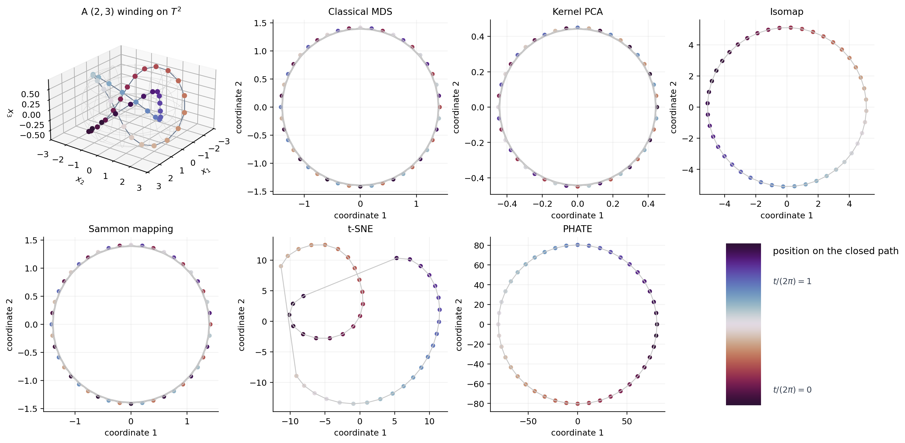

Comparing embeddings of a torus trajectory#
Dimension-reduction methods preserve different structures. Classical MDS and Sammon mapping target pairwise distances with different stress functions; kernel PCA diagonalizes a distance kernel; Isomap replaces direct distances by shortest paths in a neighbor graph; t-SNE emphasizes local probability neighborhoods; and PHATE embeds diffusion-potential distances. GeoJAX builds all six from the same validated manifold dataset.
We use the closed winding
on the flat torus \(T^2\). The path repeatedly crosses the edges of its angular chart, but it is continuous on the manifold. MDS is the global metric baseline; Sammon reweights stress toward nearby pairs [Sammon, 1969]; Isomap follows a neighborhood graph [Tenenbaum et al., 2000]; t-SNE emphasizes probabilistic neighborhoods [van der Maaten and Hinton, 2008]; and PHATE emphasizes multiscale transitions [Moon et al., 2019].
from pathlib import Path
import jax
jax.config.update("jax_enable_x64", True)
import jax.numpy as jnp
import matplotlib.pyplot as plt
import numpy as np
from geojax.geometry import Torus
from geojax.learning import (
classical_mds,
isomap,
kernel_pca,
phate,
sammon_mapping,
tsne,
)
plt.rcParams.update({
"figure.dpi": 220,
"savefig.dpi": 320,
"font.size": 10,
"axes.titlesize": 11,
"axes.spines.top": False,
"axes.spines.right": False,
})
M = Torus(size=2)
phase = jnp.linspace(0.0, 2.0 * jnp.pi, 44, endpoint=False)
points = M.project(jnp.stack([2.0 * phase, 3.0 * phase], axis=-1))
path_position = phase / (2.0 * jnp.pi)
mds = classical_mds(M, points, n_components=2)
kpca = kernel_pca(M, points, n_components=2)
iso = isomap(M, points, n_components=2, n_neighbors=5, mutual=False)
sammon = sammon_mapping(M, points, n_components=2, maxiter=100, tol=1e-6)
stochastic = tsne(
M,
points,
n_components=2,
perplexity=7.0,
key=jax.random.key(72),
maxiter=250,
learning_rate=30.0,
early_exaggeration=4.0,
exaggeration_iterations=75,
)
diffusion = phate(
M,
points,
n_components=2,
n_neighbors=5,
diffusion_time=5,
max_diffusion_time=10,
)
results = {
"Classical MDS": mds,
"Kernel PCA": kpca,
"Isomap": iso,
"Sammon mapping": sammon,
"t-SNE": stochastic,
"PHATE": diffusion,
}
for name, result in results.items():
print(f"{name:16s} objective={float(result.objective):.5f} reason={result.reason}")
Classical MDS objective=0.36379 reason=eigendecomposition completed
Kernel PCA objective=-8.89371 reason=centered-kernel eigendecomposition completed
Isomap objective=0.16379 reason=all-pairs graph distances computed
Sammon mapping objective=0.14073 reason=Last stepsize smaller than options.minstepsize = 1e-10.
t-SNE objective=0.37587 reason=requested iterations completed
PHATE objective=0.14245 reason=diffusion potential embedded
Visual report#
The first panel uses the familiar embedding of a flat torus in \(\mathbb R^3\) only for display. Its induced surface metric is not the flat product metric used in the computation. Coordinates returned by the six methods can rotate, reflect, or rescale without changing their scientific content, so we compare continuity and neighborhood organization rather than raw axes. The cyclic color records position on the closed path.
fig = plt.figure(figsize=(14.8, 7.2), constrained_layout=True)
axis3d = fig.add_subplot(2, 4, 1, projection="3d")
major_radius = 2.0
minor_radius = 0.64
theta_grid, phi_grid = np.meshgrid(
np.linspace(-np.pi, np.pi, 44),
np.linspace(-np.pi, np.pi, 28),
)
surface_x = (major_radius + minor_radius * np.cos(phi_grid)) * np.cos(theta_grid)
surface_y = (major_radius + minor_radius * np.cos(phi_grid)) * np.sin(theta_grid)
surface_z = minor_radius * np.sin(phi_grid)
axis3d.plot_wireframe(
surface_x, surface_y, surface_z,
color="0.80", linewidth=0.32, rstride=3, cstride=4,
)
theta = np.asarray(points[:, 0])
phi = np.asarray(points[:, 1])
display_x = (major_radius + minor_radius * np.cos(phi)) * np.cos(theta)
display_y = (major_radius + minor_radius * np.cos(phi)) * np.sin(theta)
display_z = minor_radius * np.sin(phi)
axis3d.plot(display_x, display_y, display_z, color="#64748B", linewidth=1.0)
axis3d.scatter(
display_x, display_y, display_z,
c=np.asarray(path_position), cmap="twilight_shifted", s=26, depthshade=False,
)
axis3d.set(title="A $(2,3)$ winding on $T^2$", xlabel="$x_1$", ylabel="$x_2$", zlabel="$x_3$")
axis3d.set_box_aspect((1.0, 1.0, 0.55))
axis3d.view_init(elev=24, azim=36)
for position, (name, result) in enumerate(results.items(), start=2):
axis = fig.add_subplot(2, 4, position)
coordinates = np.asarray(result.coordinates)
closed = np.vstack([coordinates, coordinates[:1]])
axis.plot(closed[:, 0], closed[:, 1], color="0.78", linewidth=1.0)
axis.scatter(
coordinates[:, 0], coordinates[:, 1],
c=np.asarray(path_position), cmap="twilight_shifted", s=28,
edgecolor="white", linewidth=0.25,
)
axis.set(title=name, xlabel="coordinate 1", ylabel="coordinate 2")
axis.grid(alpha=0.17)
legend_axis = fig.add_subplot(2, 4, 8)
legend_axis.set_axis_off()
gradient = np.linspace(0.0, 1.0, 256)[:, None]
legend_axis.imshow(
gradient, cmap="twilight_shifted", aspect="auto",
extent=(0.15, 0.35, 0.0, 1.0),
)
legend_axis.text(0.42, 0.98, "position on the closed path", va="top", fontsize=11)
legend_axis.text(0.42, 0.75, r"$t/(2\pi)=1$", color="#374151")
legend_axis.text(0.42, 0.08, r"$t/(2\pi)=0$", color="#374151")
legend_axis.set(xlim=(0.0, 1.0), ylim=(-0.04, 1.04))
output = next(
path for path in (
Path("../_static/tutorials/dimension-reduction.png"),
Path("docs/_static/tutorials/dimension-reduction.png"),
Path("_static/tutorials/dimension-reduction.png"),
)
if path.parent.exists()
)
output.parent.mkdir(parents=True, exist_ok=True)
fig.savefig(output, bbox_inches="tight")
plt.show()

The implementations are dense: storing pairwise distances costs \(O(n^2)\) and Floyd–Warshall Isomap costs \(O(n^3)\) work. Sammon and t-SNE add iterative optimization, while the eigendecomposition and diffusion methods are deterministic for fixed input. The torus example also shows why a chart-based Euclidean preprocessing step is unsafe: chart jumps would create artificial long edges before any reduction method begins.
References#
Kevin R. Moon, David van Dijk, Zheng Wang, Scott Gigante, Daniel B. Burkhardt, William S. Chen, Kristina Yim, Antonia van den Elzen, Matthew J. Hirn, Ronald R. Coifman, Natalia B. Ivanova, Guy Wolf, and Smita Krishnaswamy. Visualizing structure and transitions in high-dimensional biological data. Nature Biotechnology, 37:1482–1492, 2019. doi:10.1038/s41587-019-0336-3.
John W. Sammon. A nonlinear mapping for data structure analysis. IEEE Transactions on Computers, C-18(5):401–409, 1969. doi:10.1109/T-C.1969.222678.
Joshua B. Tenenbaum, Vin de Silva, and John C. Langford. A global geometric framework for nonlinear dimensionality reduction. Science, 290(5500):2319–2323, 2000. doi:10.1126/science.290.5500.2319.
Laurens van der Maaten and Geoffrey Hinton. Visualizing data using t-SNE. Journal of Machine Learning Research, 9:2579–2605, 2008.